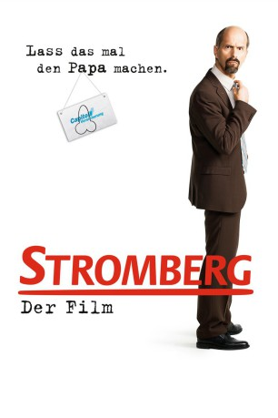
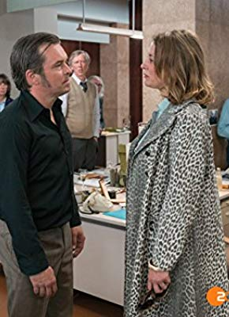
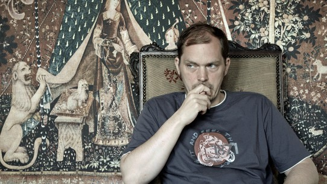
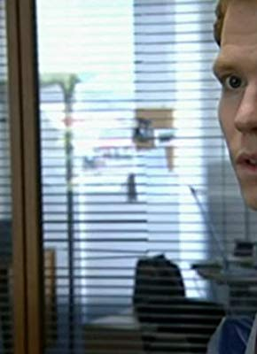

#230 Stromberg - Der Film
 
 IMDB-Wertung: 7.4 / 10
IMDB-Wertung: 7.4 / 10  Metascore: 0
Metascore: 0 
Das 50-jährige Bestehen der Capitol-Versicherung muss gefeiert werden, dachten sich die Chefs, und luden alle Mitarbeiter in ein Hotel ein. Doch das Gerücht geht um, der Firma ginge es nicht sonderlich gut. Um der Arbeitslosigkeit im Falle der Filialschließung zu entkommen, bliebe nur noch der Wechsel zum Hauptsitz. Das ist natürlich DIE Aufgabe für Stromberg, der auf der Feier pausenlos versucht, den Vorzeigeabteilungsleiter herauszukehren und seine Mitarbeiter hinter sich zu bringen. Dass dieses Vorhaben in absolutem Chaos endet, ist abzusehen.
Jahr: 2014
Dauer: 123 Minuten
FSK: 12
Land: Deutschland Studio: NFP Marketing & DistributionTonspuren:
Untertitel:
Auflösung: 1080p (1920×1040) Größe: 7833 MB
Genre: Komödie
Regisseur: Arne Feldhusen
Drehbuch: Ralf Husmann
Soundtrack: Patrick Reising, Francesco Wilking
Darsteller:
- Diana Staehly als Tanja Steinke
- Oliver Wnuk als Ulf Steinke
- Lars Gärtner als Herr Becker , uncredited
 Christoph Maria Herbst als Bernd Stromberg
Christoph Maria Herbst als Bernd Stromberg-  Milena Dreißig als Jennifer Schirrmann
- Bjarne Mädel als Berthold Heisterkamp
- Sinan Akkus als Sinan Turculu
- Tatjana Alexander als Tatjana Berkel
- Maja Beckmann als Sabine Buhrer
-  Godehard Giese als Hartmut Münchow
- Max Kluge als Marvin
- Max Mauff als Jonas
- Carsten Meyer als Günni
- Peter Rütten als Herr Pritsch
- Jan Georg Schütte als Trappe
-  Laurens Walter als Lars Lehnhoff
 Michael Wittenborn als Klaus Klinkhammer
Michael Wittenborn als Klaus Klinkhammer- Frank-Walter Steinmeier als Frank Walter Steinmeier
- Moritz Berg als
- Rolf Dennemann als
- Dagny Dewath als Helena
- Roger Ditter als
- Martina Eitner-Acheampong als Erika Burstedt
- Martin Fromme als
- Alice Gruia als
- Therese Hämer als Birgit Stromberg
- Karin Hanczewski als Empfangsdame
- Raiko Küster als
- Ramona Kunze-Libnow als Magdalena Prellwitz
- Kristina-Maria Peters als
- Angelika Richter als Nicole Rückert
- Jürgen Rißmann als Hausmeister
- Andreas Schröders als
- Leon Ullrich als
- Johanna Wieking als
- Marc Zwinz als Herr Bröker
- Peter Güde als
- Panagiota Dimareli als Mitarbeiter Capitol
- Joe Henselewski als Mitarbeiter Capitol
- Andreas Hermann als Mitarbeiter Capitol
- Sibille Humbold als Mitarbeiter Capitol
- Prashant Prabhakar als Mitarbeiter Capitol
- Stefan Lampadius als Mitarbeiter Capitol
- Suzanne Landsfried als Mitarbeiter Capitol
- Frank Montenbruck als Mitarbeiter Capitol
- Ariane Raspe als Mitarbeiter Capitol
- Rita Winkelmann als Mitarbeiter Klüver
- Peter Brachschoss als Mitarbeiter , uncredited
- Gabriela Dierkes als (uncredited
- Ralf Husmann als Mitarbeiter Hans , uncredited
Datei: X:\2014(N-Z)\Stromberg - Der Film (2014, FSK12, 1920x1040).mkv seit 14.02.2015
Festplatte: HD 2013(I-Z)-2014(A-Z)
 Es gibt insgesamt 163 Filme in der Gruppe '2014(N-Z)'
Es gibt insgesamt 163 Filme in der Gruppe '2014(N-Z)'